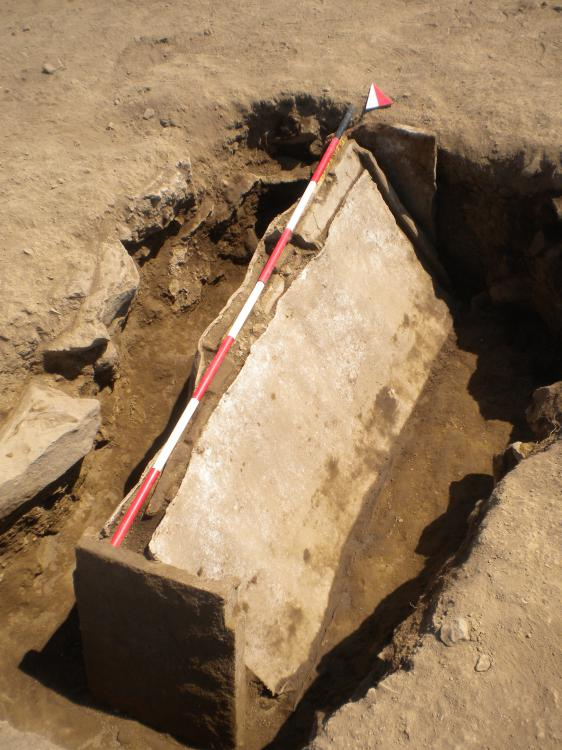
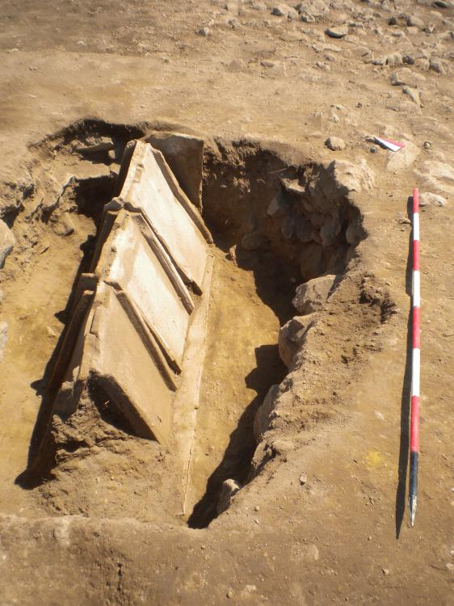

Tomb 34
Read below to learn about the main grave explored in our project!
The picture below shows the location of Tomb 34 in Area B at Gabii.

Tomb 34 is a cappuccina grave found in Area B at the Gabii excavation site. Cappuccina graves - not to be confused with the popular coffee drink - are made from lead or clay Roman roof tiles arranged in a tent-like structure. According to Marcello Mogetta and Jeffrey Becker in their article "Archaeological Research at Gabii, Italy: The Gabii Project Excavations, 2009-2011," cappuccina graves were common in Imperial Rome and were typically used for lower-class adults. Information on this grave can be found at the Gabii ARK website which includes all of the Stratographic Unit (SU) sheets used during excavations at Gabii. This website is linked at the bottom of the page in the "Important Resources" section. Information on Tomb 34 came from SU sheets 1342, 1343, 1351, 1375, 1377, and 1345. The picture below comes from SU 1342 and shows the outer cappuccina of Tomb 34.
What makes Tomb 34 so special?
Tomb 34 was composed of two layers. The outside layer of the cappuccina was made from two flat lead sheets also called tegulae and two imbrices (curved roof tiles) that capped each end (SU 1351). Clay was used as a binding agent to hold the imbrices to the tegulae (SU 1351). The inner cappuccina layer was made from six smaller tegulae that interlocked at the top (SU 1375). Tomb 34 was laid in an East-West orientation and was well-preserved unlike many other cappuccina graves which often had broken tegulae (SU 1342). The picture below comes from SU 1375 and shows the inner layer of the cappuccina.
SU Sheet 1345 indicates that inside the cappuccina was a female skeleton. The body was laid on top of another lead tegula at the base of the grave (SU 1377, SU 1345). The skeleton's feet appear to have been position slightly outside the protection of the cappuccina and in an upright position (SU 1345). This explains why the feet of the skeleton are only slightly preserved compared to the rest of the body. The picture below comes from SU 1345 from the Gabii ARK and shows the skeleton found inside Tomb 34.

References
Graham, Emma-Jayne
2006 The Burial of the Urban Poor in Italy in the Late Roman Republic and Early Empire. Journal of Roman Studies 98, 264. http://journals.cambridge.org/action/displayAbstract?fromPage=online&aid=7246004&fileId=S007543580000232X
Mogetta, Marcello and Jeffrey Becker
2014 Archaeological Research at Gabii, Italy: The Gabii Project Excavations, 2009–2011. American Journal of Archaeology 118(1), 171-188. http://www.jstor.org/stable/10.3764/aja.118.1.0171
Rawson, Beryl
2011 A companion to families in the Greek and Roman worlds. West Sussex: Wiley-Blackwell.
Gabii Project https://sites.lsa.umich.edu/gabiiproject/